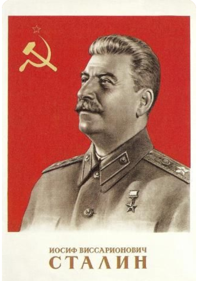

Vamos por em prática tudo que aprendi até agora. Será que sou capaz de reproduzir
tudo o que eu aprendi?
Como já disse o velho camarada Stalin na Ordem número 227 ↑:
"Nenhum passo para trás"Esse citação foi tirada da Wikipedia no endereço
Temos alguns metas a cumprir:

Acesse aqui a minha segunda Página
Eu moro na
SQN 313, Bloco F